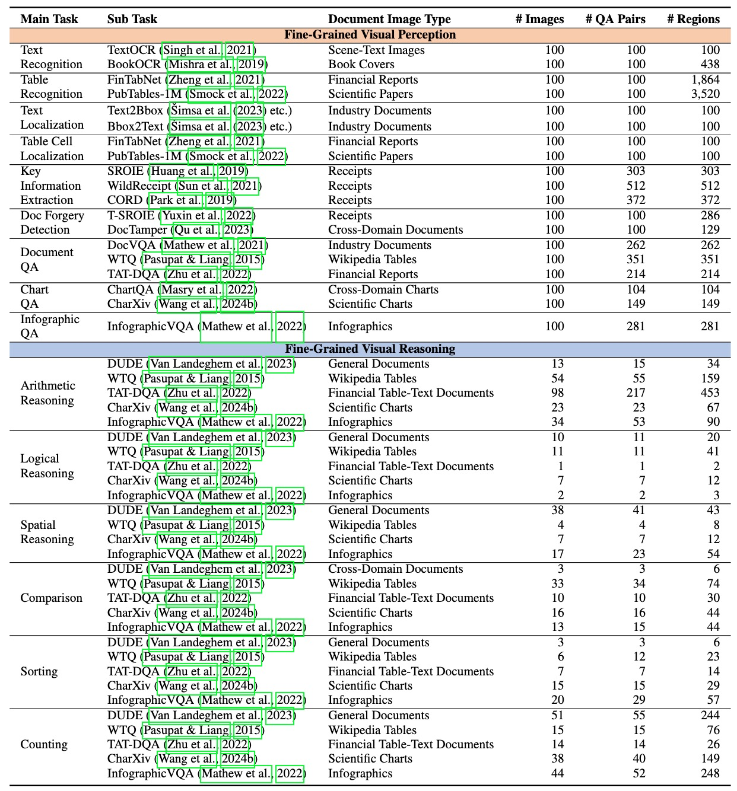
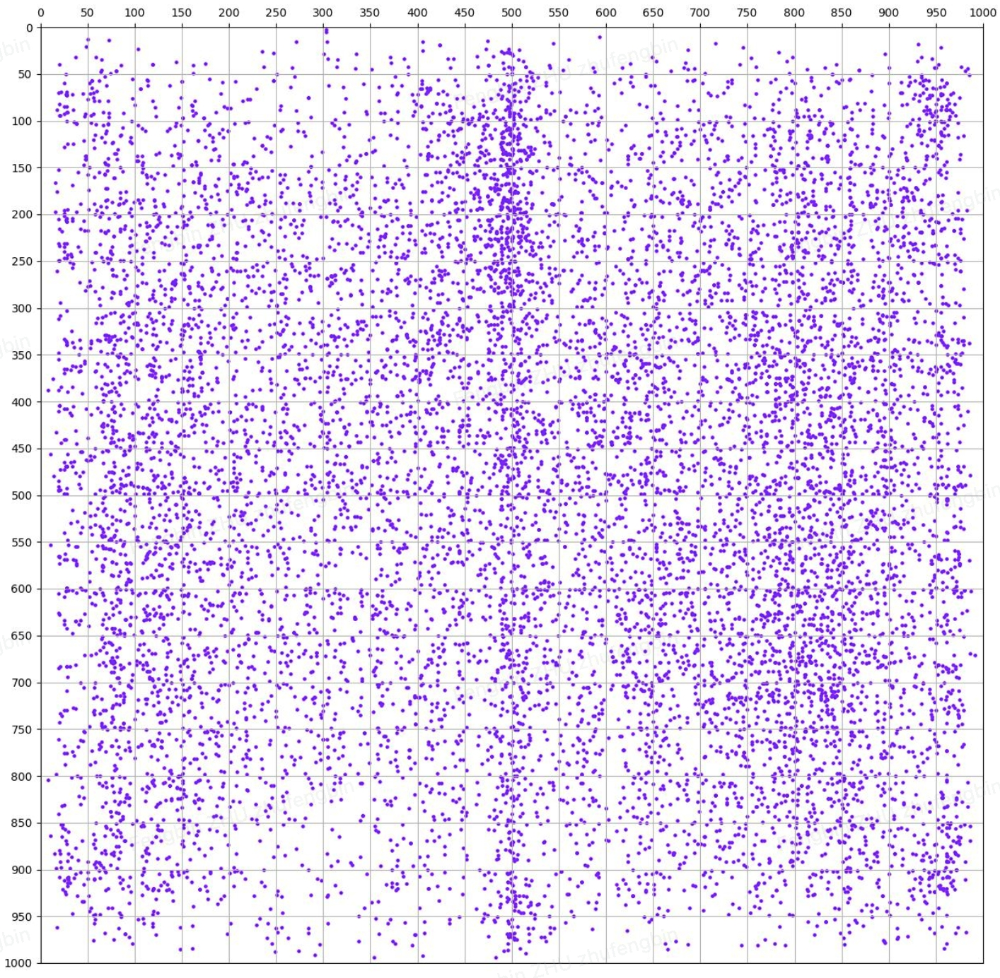
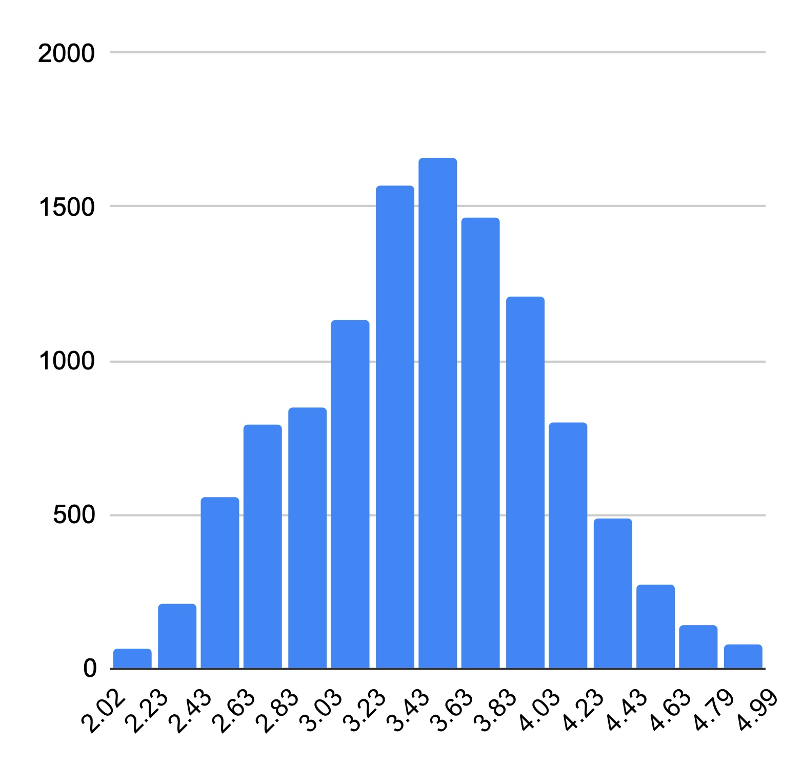
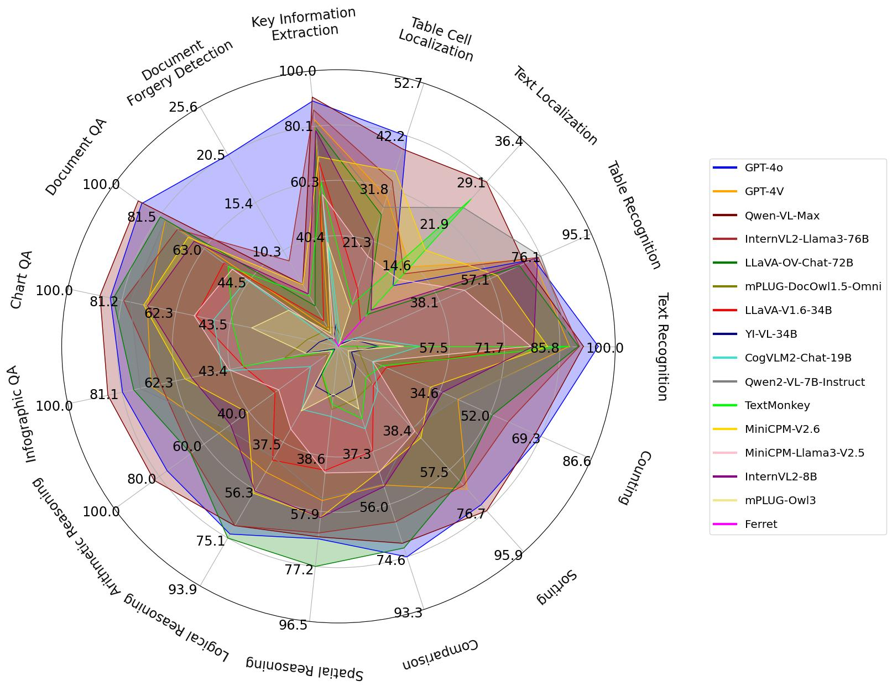
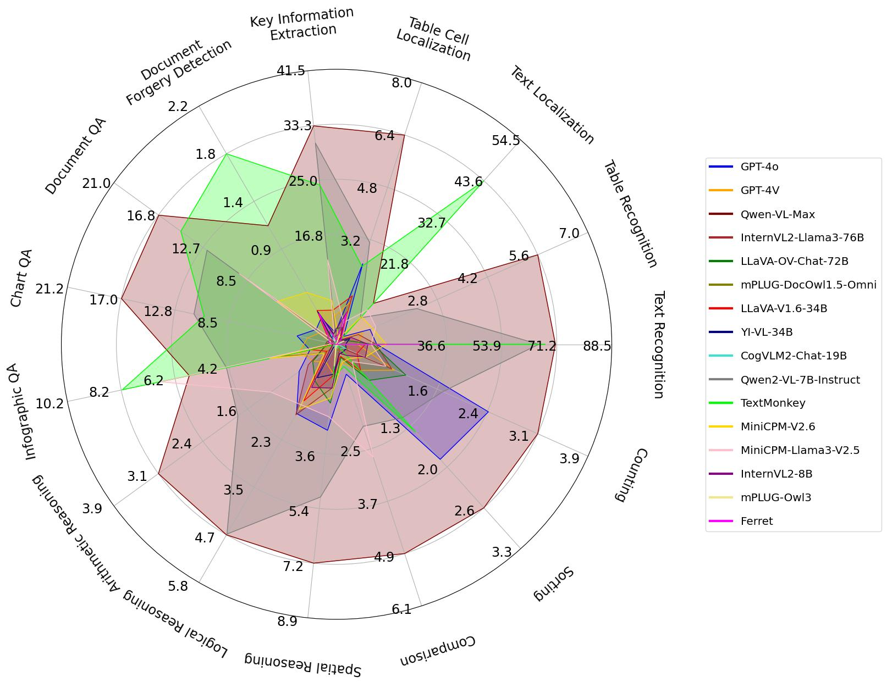

EM: Exact Match; IOU: Intersection over Union
All: Overall; VP: Fine-Grained Visual Perception; VR: Fine-Grained Visual Reasoning
Overview

Taxonomy and statistics of MMDocBench.
Supporting Regions Analysis

The position distribution of all supporting regions in MMDocBench.

The area distribution (after applying a logarithmic transformation with a base of 10) of all supporting regions in MMDocBench.
Experiment Results
Leaderboard
Model Performance Analysis on Different Tasks

Answer prediction performance comparison of LVLMs across all main tasks with F1 score.

Region prediction performance comparison of LVLMs across all main tasks with IOU score.
Explorer
Explore examples of MMDocBench
Citation
@misc{zhu2024mmdocbench
title={MMDocBench: Benchmarking Large Vision-Language Models for Fine-Grained Visual Document Understanding},
author={Fengbin Zhu and Ziyang Liu and Xiang Yao Ng and Haohui Wu and Wenjie Wang and Fuli Feng and Chao Wang and Huanbo Luan and Tat Seng Chua},
year={2024},
eprint={2410.21311},
archivePrefix={arXiv},
primaryClass={cs.CV},
url={https://arxiv.org/abs/2410.21311},
}